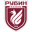

FC Rostov vs FC Krasnodar prediction & odds
FC Rostov host FC Krasnodar in the Premier League (round 16) on Sunday 29 November 2026. FC Rostov are #475 in our world ranking and have won 4 and drawn 1 of their last 5; FC Krasnodar are #228 and have won 3, drawn 1 and lost 1 of their last 5. On paper that's a big gap - 247 places - in FC Krasnodar's favour.
Our prediction
Our model sees FC Rostov v FC Krasnodar as close to a coin flip: FC Rostov 31%, a draw 29%, FC Krasnodar 41%.
Rating: 1098
Chance to win: 31%
Last 5: WWDWW
Rating: 1205
Chance to win: 41%
Last 5: WDWLW
Who will win FC Rostov vs FC Krasnodar?
FC Rostov are #475 and FC Krasnodar #228 in our world ranking of every senior club. Based on the two clubs' ratings and home advantage, the most likely result is FC Krasnodar (41%). More from the Premier League.
Head to head
| Date | Match | Score |
|---|---|---|
| 2026-08-29 | FC Krasnodar v FC Rostov | 1-0 |
| 2026-02-28 | FC Krasnodar v FC Rostov | 2-1 |
| 2025-09-27 | FC Rostov v FC Krasnodar | 0-0 |
| 2025-03-16 | FC Rostov v FC Krasnodar | 0-1 |
| 2024-09-14 | FC Krasnodar v FC Rostov | 2-0 |
Premier League table
| # | Club | P | Pts | World |
|---|---|---|---|---|
| 2 | Zenit | 15 | 31 | #145 |
| 3 | Spartak Moscow | 15 | 30 | #251 |
| 4 | FC Krasnodar | 15 | 27 | #228 |
| 5 | CSKA Moscow | 15 | 26 | #388 |
| 6 | FC Rostov | 15 | 22 | #475 |
| 7 | Rubin | 15 | 21 | #864 |
| 8 | Baltika | 15 | 20 | #764 |
How this is worked out
Every senior result from every country feeds one Elo rating system, so every club in the world sits on the same scale. Before each match the two ratings, adjusted for home advantage, give the chances of a home win, a draw and an away win. See the full world ranking and every match today.
| # | Club | P | W | D | L | GD | Pts |
|---|---|---|---|---|---|---|---|
| 1 |  Dynamo Dynamo | 15 | 10 | 2 | 3 | 10 | 32 |
| 2 |  Zenit Zenit | 15 | 10 | 1 | 4 | 15 | 31 |
| 3 |  Spartak Moscow Spartak Moscow | 15 | 9 | 3 | 3 | 16 | 30 |
| 4 |  FC Krasnodar FC Krasnodar | 15 | 7 | 6 | 2 | 7 | 27 |
| 5 |  CSKA Moscow CSKA Moscow | 15 | 7 | 5 | 3 | 6 | 26 |
| 6 |  FC Rostov FC Rostov | 15 | 6 | 4 | 5 | 2 | 22 |
| 7 |  Rubin | 15 | 5 | 6 | 4 | -2 | 21 |
| 8 |  Baltika Baltika | 15 | 5 | 5 | 5 | 4 | 20 |
| 9 |  Krylia Sovetov Krylia Sovetov | 15 | 4 | 6 | 5 | -4 | 18 |
| 10 |  FC Orenburg FC Orenburg | 15 | 3 | 8 | 4 | -2 | 17 |
| 11 |  Akhmat Akhmat | 15 | 4 | 5 | 6 | -2 | 17 |
| 12 |  Dinamo Makhachkala Dinamo Makhachkala | 15 | 5 | 2 | 8 | -9 | 17 |
| 13 |  Lokomotiv Lokomotiv | 15 | 3 | 5 | 7 | -4 | 14 |
| 14 |  Rodina Moskva Rodina Moskva | 15 | 3 | 3 | 9 | -15 | 12 |
| 15 |  Akron Akron | 15 | 2 | 6 | 7 | -10 | 12 |
| 16 |  Fakel Fakel | 15 | 2 | 3 | 10 | -12 | 9 |